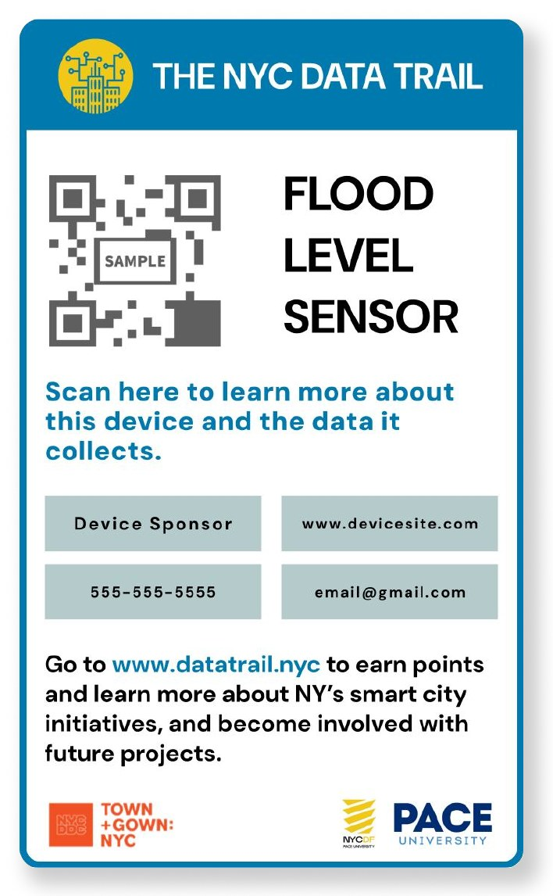
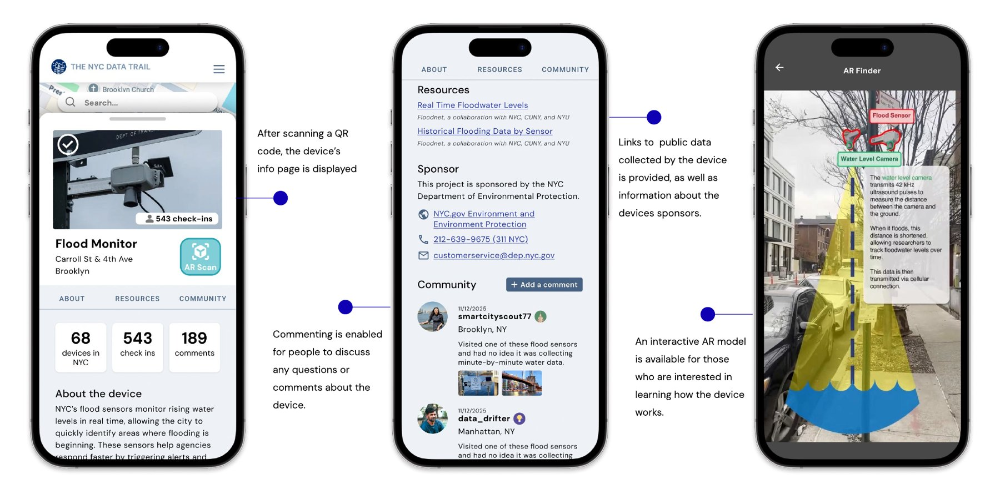
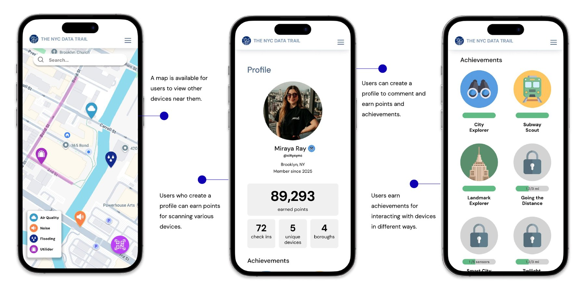

The NYC Data Trail
A gamified map that explains the smart-city sensors in your neighborhood and what they do with your data.
The problem
New York City already runs flood sensors, air-quality monitors, noise sensors, and LinkNYC kiosks. Most residents walk past them without knowing what they are, what data they collect, or who is responsible for them. People tend to find out about city infrastructure only when a street is torn up or a service goes down.
That gap matters more as the city explores larger projects such as utilidors, the shared underground tunnels that carry pipes and cables. These projects depend on public understanding and trust. We set out to learn how residents relate to smart-city infrastructure today and what would help them engage with it.
What we learned first
We started with a literature review and a comparative analysis, then ran a community survey with residents of Brooklyn and Manhattan and followed up with semi-structured interviews.
The survey showed a clear gap between how involved people are in community planning and how involved they want to be.
“I would love to participate in more community planning initiatives. I guess I just don't know where to start to look on how to get involved.”
Survey participant
- Residents said local government rarely tells them about infrastructure changes.
- People were uneasy about how data from sensors would be handled.
- They still valued sensors that catch problems before they become expensive to repair.
The design
The NYC Data Trail is a map of the city's smart devices paired with a sign at each physical location. Scanning the sign's QR code opens that device's page: what it is, why it is there, who sponsors it, what data it collects, and what the data is used for. An AR view shows how the device works.
Creating an account is optional. People who do can earn points and badges for scanning devices, leave comments on a device, and see what their neighbors think.



Testing in two rounds
- Round one: early prototype, 4 participantsThree tasks over video call. People were unsure how to start, found the icons and map markers confusing, missed the swipe gestures on device panels, and did not know what some numbers meant.
- RevisionWe added an onboarding introduction, an AR finder with a fuller information panel, a clearer scanning animation, and an expanded achievements system. We also cleaned up the main menu.
- Round two: revised prototype, 10 participantsFive tasks, a short interview about smart technology, and the System Usability Scale questionnaire.
Results
Participants called the app straightforward and intuitive, and said it taught them about devices they would otherwise have ignored. The points, badges, and AR view made learning feel like exploring. The comments made the app feel like a shared neighborhood space.
Testing also surfaced prototype problems with opening and closing overlays, and people wanted a more accurate map. Both are on the list for a full build.
What I took from it
Wording changes how participants feel in a session. When I told people they were about to perform a task, they tensed up. When I asked them to complete an exercise, they relaxed. I now write my scripts with that in mind.